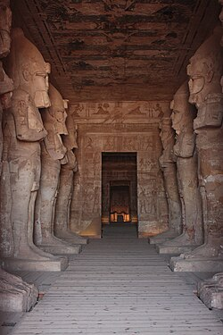
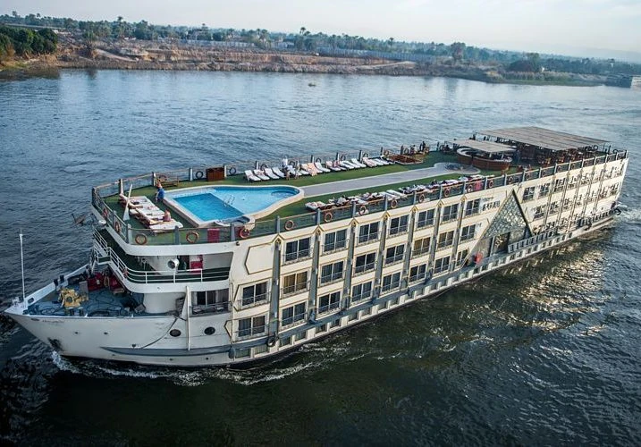
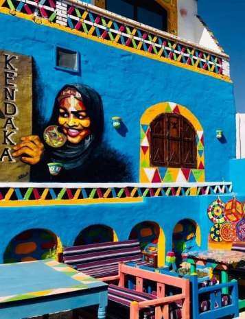
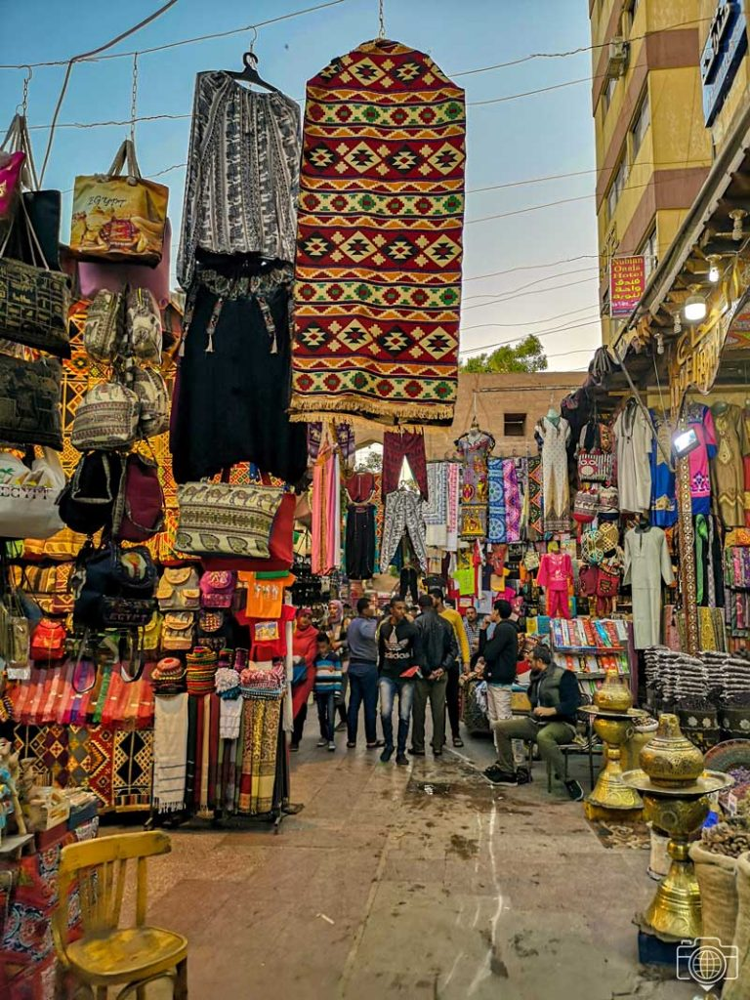
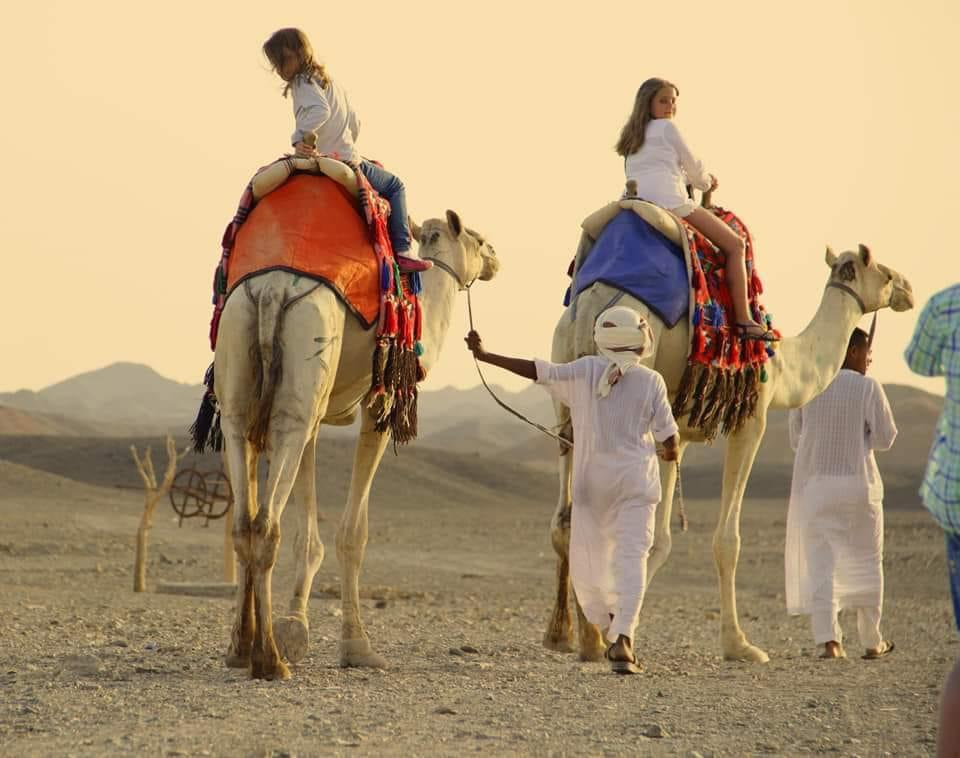
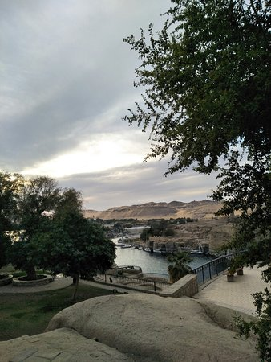

الرحلات الأثرية
التعريف بعظمة وتاريخ الحضارة المصرية القديمة.
تكشف الرحلات الأثرية عن عظمة الحضارة المصرية القديمة، حيث تضم أسوان مجموعة مميزة من المعالم الأثرية تمتد عبر عصور متعددة…
اكتشف · استمتع · تعلّم
أسوان مزيجٌ فريد من التاريخ والثقافة والجمال الطبيعي. ستجد فيها كنوزاً أثرية رائعة وقرى نوبية أصيلة، وسكينةً تجعل منها وجهةً استثنائية.
اقرأ المزيدأسوان من أبرز المدن السياحية في مصر وأقدمها وأجملها، تتميز بتاريخها العريق ومناظرها الطبيعية الخلابة على ضفاف النيل، لتكون وجهةً مثاليةً للسياحة والاسترخاء.

التعريف بعظمة وتاريخ الحضارة المصرية القديمة.
تكشف الرحلات الأثرية عن عظمة الحضارة المصرية القديمة، حيث تضم أسوان مجموعة مميزة من المعالم الأثرية تمتد عبر عصور متعددة…

الاستمتاع بالهدوء والجمال الطبيعي لنهر النيل.
يوفر الإبحار على فلوكة تقليدية تجربةً هادئةً ممتعة، وتشمل الجولات زيارة جزيرة فيلة وجزيرة إلفنتين…

تمتزج الطبيعة الخلابة مع التراث الثقافي الأصيل.
يحرص الزوار على استكشاف القرى النوبية التقليدية مثل غرب سهيل للتعرف على عادات أهل النوبة…

يضم العديد من البازارات والمحلات التجارية.
السوق السياحي في أسوان من أهم محطات الرحلات داخل المدينة، يجمع بين التراث الشعبي والحياة اليومية…

مناظر طبيعية ساحرة من الكثبان الرملية والجبال الصخرية.
تبدأ برحلات سفاري مثيرة، وركوب الجمال بين الكثبان، والإقامة في مخيمات صحراوية ليلية…

تعتمد على المناخ الجاف المشمس والخصائص الطبيعية الفريدة.
تُعد أسوان وجهةً عالميةً للسياحة العلاجية: العلاج بالرمال الساخنة، الحمامات الكبريتية، والمنتجعات الصحية المتكاملة…

تجربة مثالية للراحة والاسترخاء وسط الطبيعة.
من أبرز أنشطة رحلات الاستجمام التنزه على كورنيش النيل والاستمتاع بالمشي بين الأشجار والنوافير ومشاهدة الجزر الصغيرة. كما تُعد حديقة فريال والمناطق الخضراء المحيطة بها مكانًا مثاليًا للراحة والتأمل، مما يجعل أسوان وجهة مثالية للسكينة والهدوء.
تشتهر أسوان بأطباق نوبية وصعيدية أصيلة تعتمد على البساطة والمكونات المحلية.

واحدة من أشهر الأطباق النوبية…

جزء أساسي من التراث النوبي…

مشروب نوبي مميز ومروٍّ…
تقع محافظة أسوان في أقصى جنوب مصر، وتُعدّ محافظةً صحراويةً ونيليةً في آنٍ واحد، ويمثّل نهر النيل عنصرها الحياتي الأساسي.